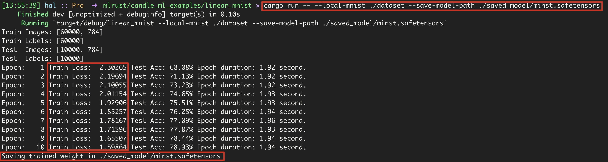
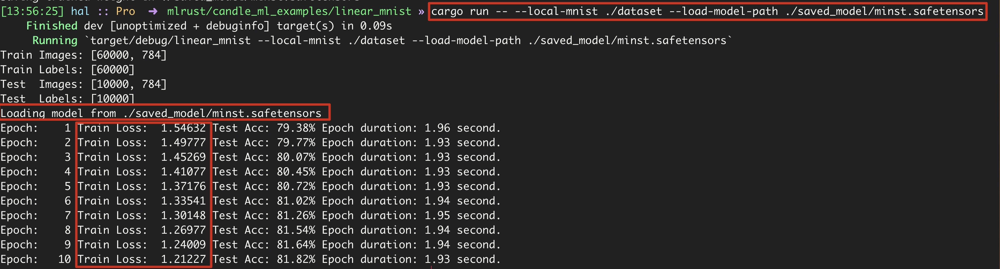

使用HuggingFace的Rust机器学习框架训练MNIST
环境
- Rust: 1.75.0-nightly
- candle-core: 0.3.0
- candle-nn: 0.3.0
- candle-datasets: 0.3.0
注意：candle-nn当前版本中依赖了Rust nightly
Cargo.toml内容如下
- rand: 随机数
- anyhow: 处理异常
- clap: 解析命令行参数
[package]
name = "linear_mnist"
version = "0.1.0"
edition = "2021"
# See more keys and their definitions at https://doc.rust-lang.org/cargo/reference/manifest.html
[dependencies]
candle-core = { git = "https://github.com/huggingface/candle.git", version = "0.3.0" }
candle-nn = { git = "https://github.com/huggingface/candle.git", version = "0.3.0" }
rand = "0.8.5"
anyhow = "1"
clap = { version = "4.4.4", features = ["derive"] }
candle-datasets = { git = "https://github.com/huggingface/candle.git", version = "0.3.0" }创建项目并安装Candle相关模块
- 使用
cargo new创建linear_mnist项目 - 进入项目目录
- 安装
candle三个模块candle-corecandle-nncandle-datasets
- 安装其他依赖库
randanyhowclap
具体操作如下:
代码
导入相关依赖
- 导入
clap::Parser解析命令行参数 - 导入
candle_core的相关依赖Device: 数据计算时放置的设备Result: 处理异常Tensor: 张量数据类型D: 是一个enum,包含Minus1和Minus2DType: 数据类型enum结构，包含支持的数据类型
- 导入
candle-nn的相关依赖loss: 损失函数相关操作ops: 函数操作，如log_softmaxLinear: 线性模型Module: 由于Linear的依赖Optimizer: 优化器VarBuilder: 构建变量VarMap: 用于存储模型变量
定义相关配置
- 定义图像维度数量和标签数量的常量
- 定义命令行参数解析,并添加指令宏
#[derive(Parser)],可以使用clap::Parser解析命令行参数learning_rate: 学习率epochs: 模型训练迭代次数save_model_path: 训练好的模型保存路径load_model_path: 加载预训练模型路径local_mnist: 本地MNIST数据集目录
- 定义训练参数结构体
TrainingArgs - 定义线性模型结构体
LinearModel
具体代码如下:
const IMAGE_DIM: usize = 784;
const LABELS: usize = 10;
#[derive(Parser)]
struct Args {
#[arg(long)]
learning_rate: Option<f64>,
#[arg(long, default_value_t = 10)]
epochs: usize,
#[arg(long)]
save_model_path: Option<String>,
#[arg(long)]
load_model_path: Option<String>,
#[arg(long)]
local_mnist: Option<String>,
}
struct TrainingArgs {
learning_rate: f64,
load_path: Option<String>,
save_path: Option<String>,
epochs: usize,
}
struct LinearModel {
linear: Linear,
}定义模型
- 定义
Model trait LinearModel实现Model traitnew: 初始化模型forward: 模型结构，前向传播
linear_z是具体创建Linear模型- 创建模型张量变量并调用
candle-nn::Linear创建线性模型返回
- 创建模型张量变量并调用
具体代码如下：
trait Model: Sized {
fn new(vs: VarBuilder) -> Result<Self>;
fn forward(&self, xs: &Tensor) -> Result<Tensor>;
}
impl Model for LinearModel {
fn new(vs: VarBuilder) -> Result<Self> {
let linear: Linear = linear_z(IMAGE_DIM, LABELS, vs)?;
Ok(Self { linear })
}
fn forward(&self, xs: &Tensor) -> Result<Tensor> {
self.linear.forward(xs)
}
}
fn linear_z(in_dim: usize, out_dim: usize, vs: VarBuilder) -> Result<Linear> {
let ws: Tensor = vs.get_with_hints((out_dim, in_dim), "weight", candle_nn::init::ZERO)?;
let bs: Tensor = vs.get_with_hints(out_dim, "bias", candle_nn::init::ZERO)?;
Ok(Linear::new(ws, Some(bs)))
}定义模型训练函数
- 输入参数
m: 数据集args: 训练参数TrainingArgs
- 获取或设置模型运算的设备
Device::Cpu - 从数据集
m中获取训练数据和标签，测试数据和标签 - 创建
varmap用来存储模型参数 - 创建
vs变量构造，存储模型参数，并将其传入到Model::new中 - 如果命令行传入
load_model_path，则会加载预训练模型 - 创建优化器
SGD - 根据
epochs迭代训练模型- 前向传播得到
logits - 计算概率
log_softmax - 计算损失函数值
- 反向传播
sgd.backward_step() - 输入测试数据得到测试数据准确率
test_accuracy - 每个
epoch花费的时间epoch_duration
- 前向传播得到
- 如果命令传入
save_model_path，则会保存模型参数- 确保存放模型的目录已经建立
具体代码如下:
fn train<M: Model>(
m: candle_datasets::vision::Dataset,
args: &TrainingArgs) -> anyhow::Result<()> {
let dev = Device::Cpu;
let train_labels = m.train_labels;
let train_images = m.train_images.to_device(&dev)?;
let train_labels = train_labels.to_dtype(DType::U32)?.to_device(&dev)?;
let test_images = m.test_images.to_device(&dev)?;
let test_labels = m.test_labels.to_dtype(DType::U32)?.to_device(&dev)?;
let mut varmap = VarMap::new();
let vs = VarBuilder::from_varmap(&varmap, DType::F32, &dev);
let model = M::new(vs.clone())?;
// Load Pre-trained Model Parameters
if let Some(load_path) = &args.load_path {
println!("Loading model from {}", load_path);
let _ = varmap.load(load_path);
}
// Create Optimizer
let mut sgd = candle_nn::SGD::new(varmap.all_vars(), args.learning_rate)?;
// Iterate training model
for epoch in 1..=args.epochs {
let start_time = std::time::Instant::now();
let logits = model.forward(&train_images)?;
let log_sm = ops::log_softmax(&logits, D::Minus1)?;
let loss = loss::nll(&log_sm, &train_labels)?;
sgd.backward_step(&loss)?;
let test_logits = model.forward(&test_images)?;
let sum_ok = test_logits
.argmax(D::Minus1)?
.eq(&test_labels)?
.to_dtype(DType::F32)?
.sum_all()?
.to_scalar::<f32>()?;
let test_accuracy = sum_ok / test_labels.dims1()? as f32;
let end_time = std::time::Instant::now();
let epoch_duration = end_time.duration_since(start_time);
println!("Epoch: {epoch:4} Train Loss: {:8.5} Test Acc: {:5.2}% Epoch duration: {:.2} second.",
loss.to_scalar::<f32>()?, test_accuracy * 100., epoch_duration.as_secs_f64());
}
// Save Model Parameters
if let Some(save_path) = &args.save_path {
println!("Saving trained weight in {save_path}");
varmap.save(save_path)?
}
Ok(())
}Main函数
- 解析命令行参数
Args - 根据
local_mnist命令行参数指定的目录加载MNIST数据集 - 设置学习率
- 创建模型训练参数
TrainingArgs类型变量training_args并填充设置好的参数 - 调用模型训练函数
train::<LinearModel>(m, &training_args),传入数据集和模型训练参数
fn main() ->anyhow::Result<()> {
let args: Args = Args::parse();
let m: candle_datasets::vision::Dataset = if let Some(directory) = args.local_mnist {
candle_datasets::vision::mnist::load_dir(directory)?
} else {
candle_datasets::vision::mnist::load()?
};
println!("Train Images: {:?}", m.train_images.shape());
println!("Train Labels: {:?}", m.train_labels.shape());
println!("Test Images: {:?}", m.test_images.shape());
println!("Test Labels: {:?}", m.test_labels.shape());
let default_learning_rate: f64 = 0.1;
let training_args = TrainingArgs {
epochs: args.epochs,
learning_rate: args.learning_rate.unwrap_or(default_learning_rate),
load_path: args.load_model_path,
save_path: args.save_model_path,
};
train::<LinearModel>(m, &training_args)
}训练
如果
saved_model不存在，则需要先创建该目录目录结构如下
linear_mnist
├── Cargo.lock
├── Cargo.toml
├── dataset
│ ├── t10k-images-idx3-ubyte
│ ├── t10k-labels-idx1-ubyte
│ ├── train-images-idx3-ubyte
│ └── train-labels-idx1-ubyte
├── saved_model
│ └── minst.safetensors
└── src
└── main.rs训练并保存模型参数 
加载预训练模型继续训练 
完整代码地址